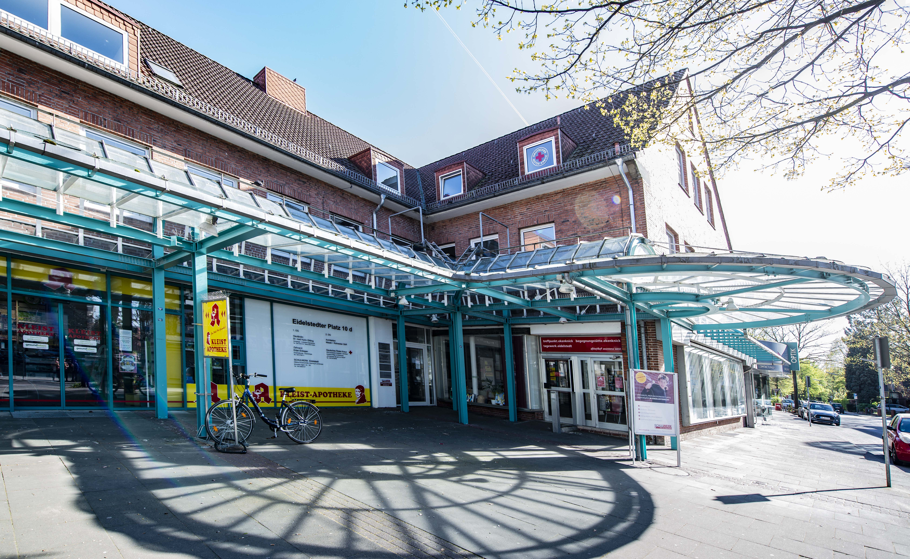
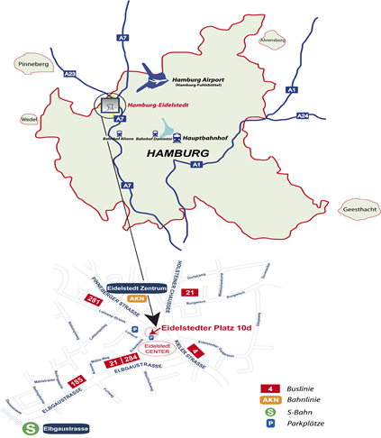

Eidelstedter Platz 10
22523 Hamburg
Tel: 040/5706711
Fax: 040/53909867

Die Praxis liegt direkt am Busbahnhof Eidelstedter Platz,
welcher von mehreren Buslinien angefahren wird.
Außerdem ist die AKN-Haltestelle Eidelstedt-Zentrum
nur 3 Minuten von unserer Praxis entfernt.
Hier können Sie Ihre Fahrt planen:
Direkt vor unserer Praxis gibt es eine begrenzte Anzahl
von Parkplätzen, mit Parkscheibe kostenlos bis zu zwei Stunden. Kostenlose Parkmöglichkeiten erhalten Sie im
Parkhaus der „Eidelstedter Anlage“, wenn Sie im Ekenknick in die zweite Straße mit dem Namen Lohwurt rechts einbiegen.
Hier können Sie Ihre Route planen.

